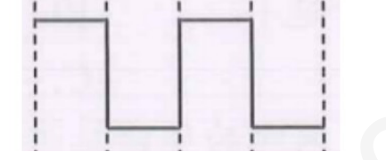
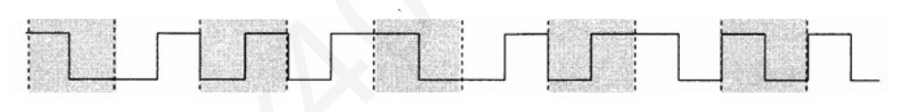
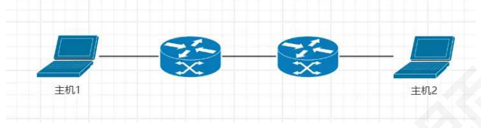

第 1 题
下列关于“信道”的描述中，哪一项是错误的？
- A．信道是信号的传输介质。
- B．一条通信电路往往包含一条发送信道和一条接收信道。
- C．信道按传输信号形式可分为模拟信道和数字信道。
- D．传输介质等同于物理层本身。
答案与解析
答案：D
信道是信号传输过程中所需的传输介质，例如光纤等，故A 正确。在双向通信中，例如全双工通信，通常需要独立的发送信道和接收信道，故B 正确。根据信道中传输的信号类型，可以将信道划分为传输模拟信号的模拟信道和传输数字信号的数字信道，故C 正确。物理层考虑的是如何在传输介质上传输比特流，而不指具体的传输介质，故D 错误。
第 2 题
一台网络摄像头采集视频后，将其编码为数字比特流，通过以太网线连接到路由器，路由器再通过光纤网络将数据发送到远程的服务器。在此通信系统中，网络摄像头本身是①，以太网线和光纤共同构成了②，比特流在这些介质上以光信号或电信号的形式存在，这些光信号或电信号是③，而监控中心服务器是④。
- A．①信源②信道③信号④信宿
- B．①信道②信源③信号④信宿
- C．①信号②信道③信宿④信源
- D．①信源②信号③信道④信宿
答案与解析
答案：A
一个通信系统主要包括信源、信道和信宿。信源是产生和发送原始信息的地方。在本题中，网络摄像头采集视频并编码，是信息的源头，因此是①信源。信道是传输信号的物理路径或逻辑路径。以太网线和光纤是承载信号的传输介质，它们共同构成了②信道。信号是数据的电磁或光学表现形式，适合在信道中传输。比特流以光信号或电信号的形式在介质上传输，这些是③信号。信宿是接收信息的一方。监控中心服务器是最终接收数据的一方，因此是④信宿。
第 3 题
在计算机网络中，下列关于“带宽”的描述，哪一项是正确的？
- A．带宽指数据传输过程中，网络通信线路所能支持的最高数据传输率，单位是比特/秒
- B．带宽指信号所包含的各种不同频率成分所占据的频率范围，单位是赫兹
- C．带宽指单位时间内通过某个网络的实际数据量，单位是比特/秒
- D．带宽指数据从网络的一端传送到另一端所耗费的总时间，单位是秒
答案与解析
答案：A
在计算机网络领域，带宽指在单位时间内，网络中某信道所能通过的“最高数据率”或“额定速率”，单位是比特/秒(bps)。
第 4 题
在数字通信中，一个码元可以携带多个比特的信息量。如果一个码元有16 种不同的离散状态，那么一个码元可以表示多少个比特？
- A．2 比特
- B．4 比特
- C．8 比特
- D．16 比特
答案与解析
答案：B
若一个码元有M 种离散状态，则每个码元可以携带𝑙𝑜𝑔2𝑀比特的信息，所以16 种状态可以表示4 个比特。
第 5 题
某信道的波特率为2400 Baud，若每个码元携带3 比特的信息量，则该信道的信息传输速率（比特率）是多少？
- A．800 bps
- B．2400 bps
- C．7200 bps
- D．9600 bps
答案与解析
答案：C
信息传输速率（比特率）等于码元传输速率（波特率）乘以每个码元所承载的信息量（比特数）。 𝑅𝑏= 𝑅𝐵∗𝑙𝑜𝑔2𝑀这里直接给出了每个码元携带3 比特，所以2400Baud*3bit=7200bps。
第 6 题
关于奈奎斯特定理和香农定理，下列说法错误的是？
- A．奈氏准则给出了无噪声信道中码元传输速率的上限，以避免码间串扰
- B．香农定理给出了有噪声信道中信息传输速率的上限
- C．在实际应用中，信道的数据传输速率可以超过香农极限，但不能超过奈氏极限
- D．奈氏准则未考虑噪声，而香农定理考虑了高斯噪声
答案与解析
答案：C
香农定理定义了在给定带宽和信噪比的信道中，可靠信息传输速率的理论上限。任何实际通信系统的信息传输速率都不可能超过该信道容量。奈氏准则关注的是无噪声情况下的码元速率上限。
第 7 题
若某无噪声信通的极限码元传输速率是4000 波特，采用16 个幅值的ASK 调制，则该信道的最大数据传输速率是（）。
- A．4 kbps
- B．8 kbps
- C．16 kbps
- D．64 kbps
答案与解析
答案：C
ASK（幅移键控）用不同的振幅电平表示码元。16 个不同的幅值意味着每个码元可以代表4 个比特。因此，数据传输速率= 4000波特×4比特/波特=16000 bps=16 kbps。
第 8 题
一条数字传输链路的带宽为8kHz。若采用理想的8 电平PAM 调制（即每个码元有8 种幅值状态），在不考虑噪声的情况下，理论上1 秒内最多可以传输多少个码元，以及对应的数据传输速率是多少？
- A．8000, 24kbps
- B．16000, 48kbps
- C．16000, 128kbps
- D．32000, 96kbps
答案与解析
答案：B
在无噪声情况下，根据奈氏准则，最大码元传输速率R=2W，为16000Baud，对于8 电平PAM，每个码元携带3 比特信息。因此，最大数据传输速率R×3=16000×3=48000 bps=48 kbps。
第 9 题
要在一个频率范围为2kHz 到10kHz 的信道上传输数据，且要求其根据香农定理计算的极限数据传输速率不低于40kbps，则该信道的信噪比S/N 至少应为多少？
- A．15
- B．31
- C．63
- D．127
答案与解析
答案：B
信道带宽为10kHz-2kHz=8kHz ，根据香农公式，信道的极限传输速率为𝑊𝑙𝑜𝑔21 + 𝑆/𝑁，代入得8𝑘𝐻𝑧∗𝑙𝑜𝑔21 + 𝑆/𝑁>= 40𝑘𝑏𝑝𝑠，可解得S/N 至少为31。
第 10 题
一个有噪声的信道极限数据传输速率为C，若保持信道带宽W 和信噪比不变，通过改变调制方式将每个码元所携带的比特数从V 提升至𝑉2，则信道的极限数据传输速率将变为（ ）。
- A．C/2
- B．C
- C．2C
- D．𝐶2
答案与解析
答案：B
香农定理确定的信道容量C 是信道本身的固有属性，由带宽W 和信噪比S/N 决定。调制方式的选择影响实际能达到的数据速率以及在给定波特率下能传输多少比特，但它不能改变信道的理论容量上限。
第 11 题
假设某信道带宽为4kHz，其奈氏准则下的极限码元速率为8kBaud。若实际采用的调制方式使得每个码元能表示4 比特，但在有噪声环境下，根据香农定理计算出的信道容量仅为20kbps。那么该信道实际能达到的最大可靠数据传输速率是？
- A．8 kbps
- B．16 kbps
- C．20 kbps
- D．32 kbps
答案与解析
答案：C
奈氏准则给出了无噪声情况下的码元速率上限，由此计算出的数据速率 （32kbps）是一个理论上的可能值。但香农定理考虑了噪声，并给出了信道能够可靠传输信息的最大速率（20kbps）。实际可靠的数据传输速率不能超过香农极限。
第 12 题
某通信链路的带宽为3kHz，采用4 个相位，每个相位具有x 种振幅的QAM 调制技术。若该链路在无噪声情况下的极限数据传输速率大于信噪比为30dB 条件下的极限数据传输速率，则x 至少是 （）。
- A．4
- B．8
- C．16
- D．32
答案与解析
答案：B
信道采用4 个相位，每个相位有x 种振幅，则每个码元可以表示4x 个比特的信息。根据奈奎斯特定理，无噪声下极限数据传输速率𝐶1= 2𝑊𝑙𝑜𝑔24𝑥。根据香农定理可知，在信噪比为30dB 条件下，极限数据传输速率𝐶2= 𝑊𝑙𝑜𝑔21 + 𝑆/𝑁= 𝑊𝑙𝑜𝑔21 + 1000。由题意知，𝐶1> 𝐶2，可解得x 至少为8。
第 13 题
现有一条信道可用带宽为1 kHz，由于天气等因素影响，链路平均信噪比仅为3。假设该链路的传输完全遵循香农定理给出的理论极限，并且不考虑其他任何开销和协议延迟，则从信源开始发送到信宿接收完一个100KB 的文件大约需要多少秒？
- A．205 秒
- B．273 秒
- C．328 秒
- D．410 秒
答案与解析
答案：D
首先计算信道容量C=2000bps。文件大小为100KB=100×1024×8bits=819200bits。所需时间=总比特数/信道容量= 819200/2000=409.6秒，约等于410 秒。
第 14 题
主机H1 要向主机H2 发送一个大小为4 ∗106B 的文件。两台主机通过一个路由器以存储转发方式互联，形成两段链路。每段链路的带宽均为200kHz，且均为无噪声信道，采用QAM-16 调制方案。 H1 将文件分割成若干个大小为1000B 的分组（不考虑分组头开销）进行发送。若忽略所有链路的传播延迟、路由器的处理延迟以及分组的拆装时间，则主机H1 从开始发送第一个分组到主机H2 接收完最后一个分组，总共需要的时间大约是多少？
- A．10.005 秒
- B．20.000 秒
- C．20.005 秒
- D．40.010 秒
答案与解析
答案：C
该信道为无噪声信道，则可根据奈氏准则计算极限数据传输速率𝐶= 2𝑊𝑙𝑜𝑔2𝑀= 1.6𝑀𝑏𝑝𝑠。一个分组的长度为1000B，则共4000 个分组(N=4000)，每个分组的发送时延𝑇𝑝= 1000 ∗8𝑏𝑖𝑡/1.6𝑀𝑏𝑝𝑠= 0.005𝑠。网络采取存储转发，共两段链路(k=2)，忽略传播时延，总时间𝑇总= （𝑁+ 𝑘−1）∗𝑇𝑝= 20.005𝑠。 𝑆
第 15 题
假设某信道中的信号功率为0.6W，噪声功率为0.0193W，信道的频带宽度为160 MHz，信道的长度为1km，信号在该信道的传播速率为200,000km/s，则该信道的时延带宽积是（ ）。
- A．500bit
- B．512bit
- C．1024bit
- D．4000bit
答案与解析
答案：D
本题考察香农公式。最高数据传输速率(信道带宽)= 𝑊log21 + 𝑏𝑠= 𝑁0.6𝑏𝑠= 800𝑀𝑏𝑠； 160𝑀× log21 + 0.0193时延带宽积=传播时延*带宽=。
第 16 题
调制解调技术主要使用在（ ）通信方式中。
- A．模拟信道传输数字数据
- B．模拟信道传输模拟数据
- C．数字信道传输数字数据
- D．数字信道传输模拟数据
答案与解析
答案：A
数字数据通过调制解调器调制成模拟信号，在接收端将通过调制解调器将模拟信号还原为数字信号。基本的数字调制方法有移幅键控法(ASK)、移频键控法(FSK)、移相键控法(PSK) 和正交振幅调制法(QAM)。模拟数据采用脉码调制PCM 转换成数字信号，经过采样、量化、编码三个步骤，常用于音频信号。数字数据通过数字发送器转换成数字信号；模拟数据通过放大调制器转换成模拟信号。
第 17 题
采用FSK 进行数字数据调制时，是通过改变载波信号的哪个参数来表示不同的数字比特？
- A．振幅
- B．频率
- C．相位
- D．占空比
答案与解析
答案：B
FSK是“频移键控”的缩写，它使用不同频率的载波信号来代表不同的数字比特。
第 18 题
下列二进制数字调制方法中，不能仅凭当前码元信息传输数字信息的是（ ）。
- A．ASK
- B．PSK
- C．FSK
- D．DPSK
答案与解析
答案：D
ASK, PSK, FSK都是根据当前码元信号的某个参数（振幅、绝对相位、频率）来确定其代表的比特。而DPSK（差分相移键控）则是利用相邻码元之间的载波相位差来表示数字信息，因此解调当前码元时需要知道前一个码元的相位信息。
第 19 题
在一个网络的物理线路上抓到波形图片段，如下所示，下列说法不正确的是（ ）。

- A．该编码方式有可能是NRZ 编码
- B．该编码方式有可能携带同步信息
- C．该波形图传递的一定是数字数据
- D．该波形图不可能是从以太网抓取的
答案与解析
答案：C
观察题目发现，每一个周期内的波形图没有跳变，因此排除曼彻斯特、差分曼彻斯特和归零编码，有可能是不归零编码和反向不归零编码。NRZ 编码就是不归零编码，A 选项正确。该波形图有可能是反向不归零编码，该编码方式会携带同步信息，B 选项正确。该波形图传递的是数字信号，但所传递的数据不一定是数字数据，模拟数据也可以编码成数字信号。C 选项错误。以太网默认使用曼彻斯特编码，该波形图无跳变，不可能是曼彻斯特编码，D 选项正确。
第 20 题
下列选项中包含同步信息的编码是（ ）。 I．归零编码II．非归零编码III．曼彻斯特编码IV．差分曼彻斯特编码
- A．II、III
- B．I、III、IV
- C．III、IV
- D．II、III、IV
答案与解析
答案：B
非归零编码，用高/低电平表示1/0，没有同步信息。归零编码通过每个脉冲中间跳变到0 来确定同步信息，曼彻斯特编码和差分曼彻斯特编码也是通过中间跳变来同步。
第 21 题
下图是某个10Base-T 以太网发送的一段信号，它所表示的比特流为

- A．0110110001
- B．0111010111
- C．1001001000
- D．1000100111
答案与解析
答案：D
10BASE-T 是指带宽位10Mb/s 的传统以太网。传统以太网采用曼彻斯特编码。曼彻斯特编码在每个码元中间时刻电平发送跳变，上跳变表示1，下跳变表示0，也可以上跳变表示0，下跳变表示1。
第 22 题
为了以10Mbps 的速率在一个信道上传输数据，若采用曼彻斯特编码，则其码元速率（波特率）和所需的最小信道带宽分别是多少？
- A． 10MBaud, 5MHz
- B． 10MBaud, 10MHz
- C． 20MBaud, 10MHz
- D． 20MBaud, 20MHz
答案与解析
答案：C
曼彻斯特编码的码元速率（波特率）是数据速率的两倍，已知数据速率为10Mbps，则波特率为2*10M=20MBaud。根据奈氏准则，理想低通信道的最高码元传输速率=2WBaud，其中W 为信道的频率带宽。将波特率20MBaud代入可得，所需的最小信道带宽为10MHz。
第 23 题
下列关于数据交换方式叙述正确的是（ ）
- A．报文交换传输延迟最大但服务最可靠。
- B．电路交换传输延迟最小且服务最可靠。
- C．分组交换传输延迟最小但服务最不可靠。
- D．分组交换总延迟最大但服务最可靠。
答案与解析
答案：B
电路交换是面向连接的，能够保证可靠传输，而分组交换和报文交换是无连接的，因此电路交换的可靠性是最高的，A 和D 错误。并且电路交换的物理链路建立后，双方可随时发送数据，因此电路交换的传输时延最低，所以B 正确C 错误。因此答案为B。
第 24 题
参照下图网络拓扑，主机1 向主机2 发送一个大小为0.5MB 的文件。所有链路的数据传输速率均为2Mbps。传播时延和节点处理时延忽略不计。若采用报文交换方式，则从主机1 开始发送到主机2 完整接收该文件所需的总时间是多少？

- A．2 秒
- B．4 秒
- C．6 秒
- D．8 秒
答案与解析
答案：C
在报文交换中，整个文件作为一个完整的报文进行发送。网络中的路由器采用 “存储-转发”的方式处理该报文，即每个路由器必须完整地接收到整个报文，然后才能开始向下一个节点转发。从主机H1 到主机H2 共经过了2 个路由器，构成了3 段链路。传播时延和节点处理时延均忽略不计，总时延主要由发送时延构成。报文需要经过3段链路的发送，每段链路的发送时延为0.5MB/2Mbps=2s，则总时间为3*2s=6s。
第 25 题
主机甲和主机乙通过一条链路进行连接，链路中只经过一个路由器，每段链路的传输速率均为10 kbps，忽略所有的传播时延、分组头开销和分组拆装时间，主机甲采用10kb 的分组大小向乙发送了一个大小为20kb 的报文，花费了t 秒。在t秒内，主机甲采用报文交换的方式能传输的报文大小为 （）。
- A．10kb
- B．15kb
- C．20kb
- D．25kb
答案与解析
答案：B
采用分组交换时，报文被分为2个分组，分组交换的时间为20kb/10kbps+(2- 1)×10kb/10kbps = 3s；采用报文交换时，每一段链路的时延相同，故每段链路的传输时延为1.5s，数据的长度为1.5s×10kbps = 15kb，选择B 选项。
第 26 题
主机H1 通过路径H1-R1-R2-R3-Web 服务器，向Web 服务器传输文件。假设在传输过程中，路由器R2 突然发生故障。 I．若采用电路交换方式且电路已建立并通过R2，则H1 与Web 服务器的通信会立即中断。 II．若采用数据报分组交换方式，后续分组将无法到达Web 服务器，除非路由协议在R1 处找到并更新到一条不经过R2 的新路径。 III．若采用报文交换方式，且整个报文在R2 发生故障前已完整到达R1 并等待转发给R2，则该报文将丢失在R1 或无法发送。下列说法正确的是：
- A．仅I, II 正确
- B．仅I, III 正确
- C．仅II, III 正确
- D．I, II, III 均正确
答案与解析
答案：D
I.电路交换：一旦专用电路建立，路径上的任何故障（如R2 故障）都会导致整个连接中断。II.数据报分组交换：每个分组独立路由。R2 故障后，R1 发往R2 的分组将失败。除非路由协议（如OSPF, RIP）能够检测到故障并为R1 找到一条不经过R2 的新路径到达目的服务器，否则后续分组将无法送达。III.报文交换：如果报文已完整到达R1，但下一跳R2 故障，R1 无法将报文转发出去。该报文可能会在R1 的存储中因超时而丢弃，或者如果系统有动态路由能力且存在备用路径，可能会尝试重路由（但这超出了基本报文交换的范畴，更接近高级网络功能）。基本情况下，可以认为报文受阻于R1。
第 27 题
电路交换、报文交换和分组交换是三种基本的数据交换技术。下列关于它们的说法，哪一项是不正确的？
- A．电路交换传输时延最小，但连接建立时间较长。
- B．报文交换不需建立连接，但每个报文需要在中间节点完整存储和转发，导致延迟较大。
- C．分组交换无需预先分配带宽，提高了线路利用率，但可能出现失序和丢失。
- D．虚电路分组交换结合了电路交换和分组交换的优点，既保证了传输顺序，又无需连接建立过程。
答案与解析
答案：D
虚电路分组交换在数据传输前需要一个虚电路建立阶段，通过网络发送一个特殊的“呼叫请求”分组来建立一条逻辑连接（虚电路）。一旦虚电路建立，后续所有分组都沿着这条路径传输，并能保证按序到达。因此，“无需连接建立过程”的说法是错误的。
第 28 题
下列关于数据报（Datagram）网络的叙述中，正确的是（ ）。
- A．通信前必须先建立连接，以确保后续分组的按序到达。
- B．每个分组都必须包含完整的源地址和目的地址，以便独立路由。
- C．网络节点根据分组的数据报号进行转发。
- D．一旦路由选定，同一会话的所有分组都将沿相同路径传输。
答案与解析
答案：B
数据报网络是一种无连接的分组交换方式。A 错误，数据报方式不需要预先建立连接。B 正确，由于每个分组独立路由，它必须包含足够的信息（如完整的源和目的地址）使网络节点能够将其转发到正确的目的地。C 错误，转发主要依据目的地址，数据报号（如IP 分片中的标识）用于其他目的。D 错误，不同分组可能经过不同路径，因此可能失序到达。
第 29 题
在网络拥塞控制的机制上，数据报网络和虚电路网络存在显著差异。当网络出现拥塞时，下列说法正确的是（）。
- A．数据报网络的路由器会首先尝试通过内部信令通知所有相关的虚电路端点降低发送速率。
- B．虚电路网络在检测到其路径上的拥塞后，可能会通过特定的控制分组（带内或带外信令）向该虚电路的源端点发送明确的拥塞指示或速率调整请求。
- C．两种网络都主要依赖于物理层检测到线路冲突后发出的拥塞信号。
- D．数据报网络通过在每个分组中预留带宽来从根本上避免拥塞，而虚电路网络则不能。
答案与解析
答案：B
虚电路网络由于维护了连接状态，当检测到拥塞时，可以通过信令机制（如发送特定的控制分组）通知源端调整发送速率。例如，帧中继和ATM 网络都有这样的机制，因此B 正确。数据报网络是无连接的，不存在“虚电路端点“，故A 错误。拥塞是网络资源（如链路带宽、路由器缓存）不足的宏观现象，物理层冲突是链路层介质访问控制问题，故C 错误。数据报网络通常采用尽力而为的服务，不预留带宽。虚电路在建立时反而可能协商带宽，故D 错误。
第 30 题
提供虚电路服务是网络层向传输层提供的一种服务，在进行数据交换的两个端系统之间（ ）
- A．只能有一条虚电路，但能为不同的进程服务
- B．可以有多条虚电路为不同的进程服务
- C．只能有一条虚电路为一个进程服务
- D．可以有多条虚电路为一个进程服务
答案与解析
答案：B
网络层可以向传输层提供两种类型的服务，面向连接的服务称为虚电路服务，而无连接的服务称为数据报服务。虚电路的想法是避免为发送的每个分组都必须进行路由选择。取而代之的方法是，在传送分组之前，在源结点与目的结点之间建立一条逻辑连接的虚电路，以后这条虚电路上的所有分组将采取相同的路由。虚电路连接采用连接标识符进行标识，连接标识符由每台主机独立选择。因此，可以保证在主机内部每个连接标识符惟一地标识一个虚电路，同时两台主机可以存在多条虚电路为不同的进程服务。